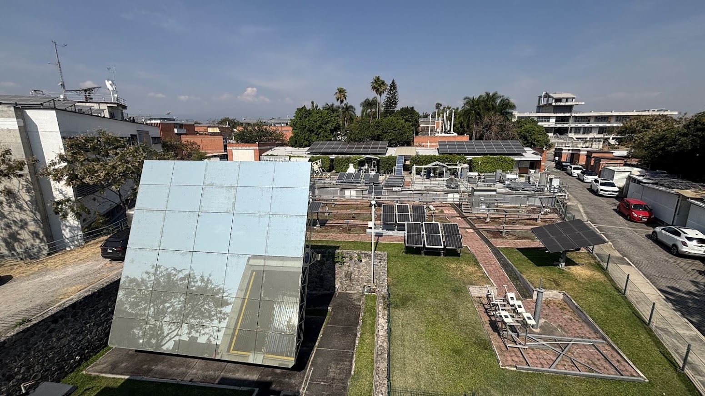
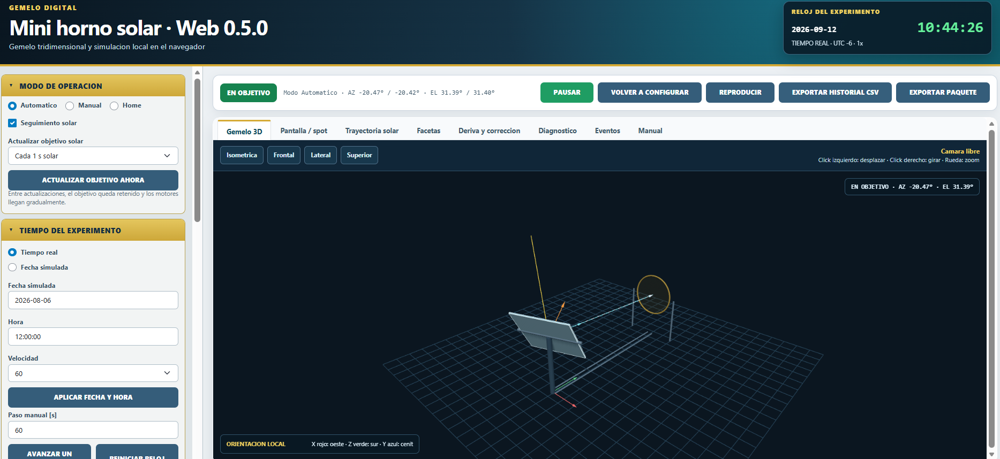
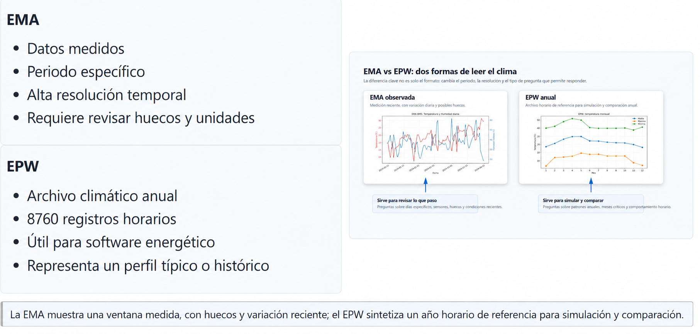

Proyectos
Control e instrumentación de heliostatos solares

Investigación doctoral en el IER-UNAM desde 2026, orientada al control en lazo cerrado del heliostato mediante retroalimentación sensorial. El trabajo tiene énfasis principal en visión por computadora y considera métodos de sensado complementarios para el posicionamiento. La investigación experimental abarca el heliostato, el horno solar, la instrumentación y el sistema de control.
Investigación doctoral Control Instrumentación
Simulador interactivo de horno solar
Simulador educativo y experimental en desarrollo para explorar un horno solar con heliostato y concentrador de facetas. Integra seguimiento solar, geometría de reflexión, visualización 3D y experimentos reproducibles con errores de orientación y estrategias de corrección. Cuenta con una versión web que ejecuta Python directamente en el navegador y una versión de escritorio en Python.
Python Shinylive Pyodide Codex Visualización 3D En desarrollo

IoT_Reloj_Confort
Reloj inteligente e infraestructura IoT para encuestas de confort térmico y medición de variables fisiológicas (XIAO ESP32C3, MAX30102, GY-906, LVGL). Incluye firmware, interfaz y backend en ThingsBoard.
C ESP32C3 LVGL ThingsBoard

Ciencia de datos y metodología para análisis del clima
Taller académico de 2026 con materiales reproducibles para el análisis de datos climáticos mediante estaciones meteorológicas automáticas (EMA), archivos EPW y cuadernos Jupyter. Integra pandas, Plotly, Weather Data, Climate Consultant y EnerHabitat.
Jupyter pandas Plotly Clima

Ecosistema de agentes de IA Hermes
Ecosistema multiagente con funciones especializadas para automatizar flujos técnicos, académicos, documentales y organizacionales. Sus agentes operan principalmente en infraestructura propia sobre Raspberry Pi y se utilizan mediante chatbots de Telegram, desde donde se envían instrucciones, se realizan consultas y se reciben respuestas.
Python LLM Sistemas multiagente Quarto Raspberry Pi Bots de Telegram Automatización Git
Sauron
Autoridad técnica que administra la Raspberry Pi y el ecosistema Hermes: servicios, procesos, logs, perfiles, permisos, respaldos, gateways, automatizaciones y aislamiento entre agentes. Diagnostica fallos, prepara cambios seguros y coordina la infraestructura.
Roger
Agente del perfil profesional. Mantiene el sitio web, CV, portafolio, publicaciones, Quarto, GitHub Pages y la narrativa académica y profesional de Julio.
C-3PO
Agente de coordinación organizacional, especialmente para el CNEER. Convierte conversaciones, pendientes y acuerdos en minutas, seguimiento, logística, contactos, coordinación de equipos y documentación operativa en Notion.
R2-D2
Agente documental que transforma notas de voz, ideas habladas, clases, reuniones y bitácoras en Markdown claro y estructurado para producir apuntes, minutas, documentos de trabajo y materiales reutilizables.
Tlamatini En desarrollo
Asistente conversacional del CNEER en desarrollo para centralizar información y orientar a asistentes y participantes mediante Telegram. El repositorio documenta una implementación en Python sobre un perfil Hermes, con gateway de Telegram, servicios systemd, aislamiento Linux y una base de conocimiento en Markdown. Se plantea como proyecto activo para futuras ediciones y no como servicio público ya desplegado.
Lampara_acrilico
Lámpara artesanal de acrílico modelada en SolidWorks. Incluye ensambles y piezas (SLDASM/SLDPRT), renders y archivos para fabricación.
Open-Source

Mecanismos
Colección de levas, mecanismos y un rodamiento modelados en SolidWorks. Contiene ensambles y piezas con vistas previas.
Open-Source

Microondas_LabVIEW
Proyecto “Microondas” implementado en LabVIEW. Incluye VIs/CTLs y archivo de proyecto, con imágenes de referencia e instrucciones de apertura.
LabVIEW

Prenda_generadora
Proyecto de investigación de prenda generadora de energía. Reúne evidencias, reportes, programas en LabVIEW, diagramas en Proteus, datos y resultados.
Open-Source

Ajuste_Calificaciones
Sitio en Quarto para cálculo y ajuste de calificaciones por unidad. Diseñado para despliegue en GitHub Pages.
HTML Quarto GitHub Pages Educación

Estrategias_bioclimaticas_vivienda
Diseño bioclimático en clima semifrío seco (Pachuca, Hidalgo). Evalúa estrategias pasivas como absortancia, ventanas Low‑e y sistemas con masa térmica para reducir grados‑hora de disconfort y mejorar el confort térmico.
HTML Bioclimática

MEIA-2023-Portafolio
Portafolio del Macro Entrenamiento en Inteligencia Artificial 2023: anomalías, bioinformática, contaminantes, geodatos y proyecto final sobre calidad del aire en CDMX.
Jupyter IA Datos

Simulacion_ventilacion_natural
Simulación de ventilación natural en cavidades mediante volúmenes finitos y el algoritmo SIMPLEC. Incluye códigos en Fortran, resultados y reporte con campos de velocidad y presión.
Fortran CFD

Ajedrez-impresion3d
Conjunto de piezas de ajedrez modeladas en SolidWorks y listas para impresión 3D. Incluye archivos fuente (SLDPRT) y exportados a STL, además de imágenes y renders de referencia.
Open-Source

Mesa_giratoria_impresion-3d
Mesa giratoria con diseño mecánico en SolidWorks, piezas para impresión 3D y diagrama eléctrico en Fritzing. Contiene ensambles y partes (SLDASM/SLDPRT), archivos STL e imágenes del ensamblaje.
Open-Source

Sistema_medicion_apertura_ventanas Privado
Sistema de registro de apertura/cierre de ventanas con sello temporal para estudios de confort y ventilación. Repositorio privado. Rol: colaborador.
Hardware Firmware IoT Confort/Ventilación Colaborador

DH2O Privado
Repositorio privado del proyecto DH2O (lata‑mas). Rol: colaborador.
Colaborador Privado